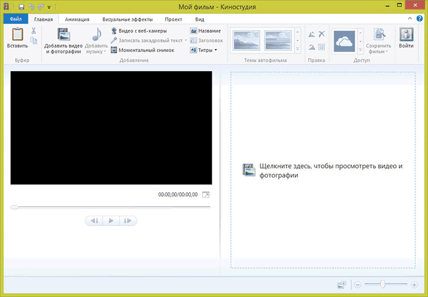

Windows Movie Maker - если вам требуется простой бесплатный видео редактор на русском языке, в котором можно легко создать ролик из нескольких видео дорожек и изображений, добавить музыку или наоборот, убрать звук, то данный видео редактор отлично подходит для этих задач. Так же, он имеет 2 версии. Новая называется - Киностудия Windows.

Windows Movie Maker — бесплатный видео редактор от Microsoft, который, в силу своей простоты и того, что ранее входил в состав операционной системы Windows, полюбился многим пользователям. Однако, в Windows 7, 8 и Windows 10 вы его не обнаружите. Программа имеет классический интуитивно понятный интерфейс, который по своей идеологии схож с большинством видео редакторов. Безусловно, есть и некоторые отличительные особенности, делающие эту программу уникальной, но мы их рассмотрим чуть позже.
Так же прикладываю статью, с подробной установкой Windows Movie Maker на свой персональный компьютер, под названием -
Как скачать Movie Maker.Можно отметить определенные плюсы данного программного обепечения: